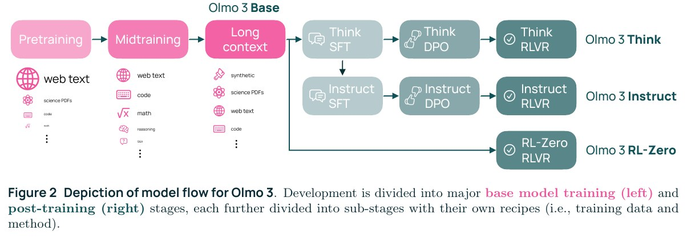
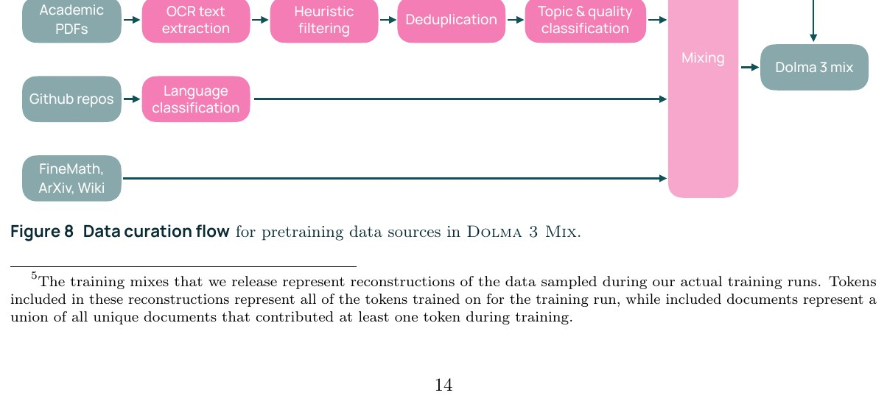

速览
版本说明：主日期取 arXiv v1（2025-12-15）。本页核对用的文本是 v2（2026-04-14），其中包含 Olmo 3.1 Think 32B / 3.1 Instruct 32B 的结果，以及「2026-01-22 上传的 K2-V2 预训练 checkpoint」表 2 脚注 3，这些内容 v1 里可能没有。
五条要点
开放的是整条模型流，不只是最终权重
每个阶段的中间 checkpoint 和最终模型都放出来了；数据既有实际训练用的配比，也有完整源数据池：预训练 9T、中训练 2T、长上下文 640B §2.1。另外给了 150B 预训练、10B 中训练的小配比，方便算力少的团队做实验。
3.1 Think 32B：数学和指令跟随追平或超过 Qwen 3 32B，知识类仍落后
AIME 2025 78.1 vs 70.9，IFBench 68.1 vs 37.3；但 ZebraLogic 80.1 vs 88.3、GPQA 56.7 vs 67.3 表 14。作者称训练 token 少约 6 倍 §2.3。
模仿学到头后，改用对比信号
拿 Qwen3 32B 的回答继续 SFT，7B 开发 checkpoint 平均分从 70.3 掉到 64.5；同样这批回答当 chosen、Qwen3 0.6B 的回答当 rejected 做 DPO，平均分升到 72.9 表 21。DPO 后再接 RLVR 最好，74.1 表 22。
选数据靠「代理模型群」+「质量感知上采样」
用 30M 参数、3B token 的代理模型群拟合配比 §3.4.4；同一话题内丢掉质量最低的 40%，最高质量的数据最多重复 7 次 图 10§A.2.4。在 1B 模型实验里，Math Easy 的 BPB 为 0.740，按 Top 10% 硬过滤是 0.858 表 39。
RL 的瓶颈在推理，工程收益大于算法收益
32B RL 用 8 个节点训练、20 个节点推理，learner 75% 的时间在等数据 §4.4.3。叠上 continuous batching 和 inflight updates 后，吞吐从 881 涨到 2949 tok/s 表 23，约 3.3× 推算。
架构与模型流：模型本身基本沿用 OLMo 2
论文没有单独的网络结构图。图 2 画的是「模型流」：三段 Base 训练之后分成三条后训练分支。

相对 OLMo 2 改了什么
- 预训练窗口从 4096 扩到 8192，覆盖预训练和中训练两段 §3.2。
- 引入滑窗注意力（SWA）：每 4 层里有 3 层用 4,096 窗口，最后一层一定是全注意力 §3.2。目的是在更长序列上预训练时控制推理成本。
- 长上下文扩展只改全注意力层：YaRN 只加在全注意力层，滑窗层的位置编码不动。作者对比了几种 RoPE 扩展方式，这个组合最好 §3.6.4。
- 其余基本沿用：tokenizer 仍用 OLMo 2 那套（基于 cl100k）；QK-Norm、RMSNorm、SwiGLU、z-loss 也都保留 §3.2表 33。
示意：原文只给了「每 4 层有 3 层 SWA」和「最后一层是全注意力」两条约束 §3.2。图中把全注意力层画在每组第 4 位，只是为了排版，原文没写组内具体排在第几层。
| 配置 | 7B | 32B |
|---|---|---|
| 层数 | 32 | 64 |
| 隐藏维度 dmodel | 4096 | 5120 |
| Q heads / KV heads | 32 / 32（MHA） | 40 / 8（GQA） |
| 激活 / 归一化 | SwiGLU / RMSNorm（作用在输出） | 同左 |
| QKV 归一化 | QK-Norm | QK-Norm |
| RoPE θ | 5·105 | 5·105 |
| Z-loss 权重 / 梯度裁剪 | 10−5 / 1.0 | 同左 |
| Embedding 是否做 weight decay | 否 | 否 |
来源：表 33。吞吐：在序列长 8192、bf16 下，7B 为 7700 tok/s/GPU（约 43% MFU），32B 为 1960 tok/s/GPU（约 41% MFU） §3.2。
数据：Dolma 3（Base 三段）+ Dolci（后训练）
全篇最细的一章。下面按阶段拆：预训练 Dolma 3 Mix → 中训练 Dolmino → 长上下文 Longmino → 后训练 Dolci。
两条总原则
- 预训练只收量够大、能真正影响能力的数据源；小而精的数据留到后面的阶段 §3.4。
- QA 对、对话这类任务数据只放进中训练和长上下文阶段。原因有两个：量不够大；而且对评测分数影响过大，会干扰其他数据源的消融结论 §3.4。
① 预训练：Dolma 3 Mix（约 6T）

网页数据漏斗（Common Crawl，104 个 dump，截至 2024-12-31）§3.4.1
条长按文档数相对 252.6B 的比例画，比例由原文数字相除得到 推算。数字来源：§3.4.1表 36。去重之后再按话题和质量切桶：24 个 WebOrganizer 话题 × 20 个质量档（每档 5 个百分位）= 480 个子集，最终形成约 8T token 的网页池。
启发式过滤：哪一步删得最多 表 36
长度过滤删掉 103.4B 文档（占 40.42%），符号过滤 56.5B（22.1%），内部重复 32.1B（12.53%）。内部重复这一步只删了 12.53%，却花掉 31.41% 的时间。整步共用约 1,030 个 i4i.32xlarge 小时，约 $11,300 §A.2.1。
MADLAD 的规则里，消融后只保留了第 2 条和第 5 条（大写词过多、命中 "cursed regex"）§A.2.1。
去重：先去干净，再按质量把重复加回来 §3.4.1
重复次数本身是一个弱质量信号，但作者先把精确重复、近似重复和重复子串全部去掉，再通过「质量感知上采样」只让高质量文档重复。子串去重用的是新的模糊后缀数组方法：重复 ≥500 字节的子串会被标记，但保留一份。为此写了 Rust 工具 Duplodocus。
质量分类器 §3.4.1
fastText 分类器。正样本：OpenHermes-2.5、ELI5，另加 UltraChat-200k、WildChat-1M；负样本：从 DCLM-RefinedWeb 采的 30GB。话题分类器是把 WebOrganizer 的 transformer 蒸馏成 fastText，在 2 万篇留出集上 P = R = 0.762 表 37。
olmOCR 学术 PDF：新的数据源 §3.4.2
自有爬虫 AI2Bot（遵守 robots.txt、不绕付费墙）抓到 238M 份 PDF → olmOCR 抽文本后剩 160M（若超过 1/250 的页需要 pdftotext 兜底，整份丢掉）→ MinHash 去重剩 156M（去掉 2.3%）→ PII 过滤剩 148M（去掉 4.9%）→ 启发式过滤（表格占比 >30%、数字占比 >20% 等）剩 108M。
PII 过滤按文档类型来判断：先用 Gemma 3 12B 看第一页有没有敏感 PII，再用 Gemma 3 4B 读前 5,000 字符给文档类型打标。判断标准是「这类文档本来就打算公开传播吗」：论文里的作者单位可以留，银行流水要删。
配比：各来源的规模与占比 表 4
绿色 = Stack-Edu 6.89%；深灰 = FineMath 3+ 2.56%；浅灰 = arXiv 0.86%；Wiki 0.04% 太窄，未画出。
| 来源 | 类型 | 9T 池 tokens | 9T 池 docs | 6T 配比 tokens（占比） | 6T docs | 150B 小样本 |
|---|---|---|---|---|---|---|
| Common Crawl | 网页 | 8.14T | 9.67B | 4.51T（76.1%） | 3.15B | 121B |
| olmOCR science PDFs | 学术文档 | 972B | 101M | 805B（13.6%） | 83.8M | 19.9B |
| Stack-Edu（再平衡） | GitHub 代码 | 137B | 167M | 409B（6.89%） | 526M | 11.1B |
| arXiv | LaTeX 论文 | 21.4B | 3.95M | 50.8B（0.86%） | 9.10M | 1.29B |
| FineMath 3+ | 数学网页 | 34.1B | 21.4M | 152B（2.56%） | 95.5M | 4.10B |
| Wikipedia & Wikibooks | 百科 | 3.69B | 6.67M | 2.51B（0.04%） | 4.24M | 64.6M |
| 合计 | 9.31T | 9.97B | 5.93T（100%） | 3.87B | 157B |
高亮行：Stack-Edu 的池子只有 137B，配比里却用了 409B，即上采样约 3 倍 推算。这和「同一 domain 最多重复约 4–7 次」的约束一致 §3.4.4。注意：发布的配比是对实际训练所采数据的重建 图 8 脚注。
约束配比（swarm + conditional mixing）§3.4.4
- Swarm：按 Olmo 3 架构训练一批 30M 参数的代理模型，每个跑 3B token（5× Chinchilla）。配比从以自然分布为中心的 Dirichlet 中采样，代理模型数量约为 domain 数的 5 倍。
- 逐任务回归：对每个任务单独拟合一个 GLM，把配比映射到 BPB，再求预测平均 BPB 最小的配比，约束是任何 domain 重复不超过约 4–7 次。
- Conditional mixing：已经优化好的配比冻结成一个「虚拟 domain」，新加或改动的 domain 只在低维子空间里重新搜。一共做了三轮：DCLM 上的 24 个话题 → Stack-Edu 的编程语言（网页固定 75%、代码固定 25%）→ PDF 的 24 个话题。
质量感知上采样 §3.4.4 · §A.2.4
每个话题拟合一条上采样曲线：横轴是质量分位，纵轴是重复次数。曲线下的积分要等于该话题分到的 token 量，上采样上限 M = 7，并丢掉质量最低的 40%。曲线族用的是截断幂指数函数。
在 1B 模型、100B token 的实验里（模拟 4.51T 的数据受限场景），这种做法的 BPB 优于所有硬过滤档位 表 39；与配比结合时，截断幂指数族也优于算术平均和几何平均 表 40。
24 个话题最终的具体权重，正文只在图 9 里画了出来，没有列成表。本页不转述图上的数值。
表 39 / 表 40：硬过滤 vs 质量上采样（BPB，越低越好）1B 模型 · OlmoBaseEval Easy
| 策略 | QA Easy | Math Easy | Code Easy |
|---|---|---|---|
| 表 39 · 数据受限（匹配 4.51T 训练的重复率） | |||
| Top 50%（重复 1.1×） | 1.042 | 0.863 | 0.943 |
| Top 30%（1.8×） | 1.031 | 0.870 | 0.880 |
| Top 10%（5.6×） | 1.041 | 0.858 | 0.939 |
| Top 5%（11.1×） | 1.065 | 0.843 | 0.930 |
| Olmo 3 Upsampling | 1.000 | 0.740 | 0.719 |
| 表 40 · 配比与上采样怎么合并 | |||
| Mixing Only | 1.005 | 0.778 | 0.872 |
| Quality Upsampling Only | 1.022 | 0.821 | 0.809 |
| Arithmetic Mean | 1.004 | 0.792 | 0.828 |
| Geometric Mean | 1.004 | 0.782 | 0.813 |
| Truncated exponential | 1.002 | 0.782 | 0.787 |
| Truncated power-exponential（Olmo 3） | 0.993 | 0.758 | 0.783 |
其他来源 §3.4.3
- 代码：Stack-Edu（the-stack-v2 中偏教学内容的子集），按编程语言分区参与配比。
- 数学：arXiv（取自 Proof-Pile-2，保留 LaTeX，截至 2023-04）；FineMath 中分数 ≥3（满分 4）的部分，取代原来的 OpenWebMath。
- 百科：Wikipedia / Wikibooks 的英文版和 Simple 版，去掉 ≤25 词的页面。
② 中训练：Dolma 3 Dolmino Mix（100B，取自 2.19T 池）
中训练的目标是：把数学和代码能力明显拉上去，同时提升 QA 和知识调用，并为后训练打好指令跟随和推理的底子 §3.5.2。方法分两层 §3.5.1：
- Microanneal（分散的小实验）：目标数据 5B + 网页 5B，共 10B 做退火，对照组是 10B 纯网页退火，这样只看「超出继续训练网页那部分」的收益。仅数学方向就试了 25 个数据源、80 次 microanneal §3.5.2。
- Integration test（集中的整合测试）：用候选的 100B 完整配比做退火，再快速 SFT 一遍，用后训练评测确认收益能传下去。一共 5 轮，报告了第 1、3、5 轮 表 6。
| 候选配比 | Base 平均 | MC STEM | MC Non-STEM | GenQA | Math | Code | FIM | SFT 后平均 |
|---|---|---|---|---|---|---|---|---|
| Round 1 | 49.7 | 64.3 | 75.2 | 68.3 | 47.4 | 23.4 | 28.4 | 35.2 |
| Round 3 | 50.7 | 64.9 | 75.7 | 68.1 | 48.7 | 24.4 | 31.9 | 35.3 |
| Round 5（含去污染） | 53.1 | 65.3 | 76.1 | 70.8 | 57.1 | 27.7 | 29.4 | 37.3 |
来源：表 6。这些轮次跑在较早的预训练 checkpoint 上，不是最终中训练的数字 §3.5.4。
合成数据怎么造 §3.5.2
- TinyMATH：MATH 训练集 7,500 题，每题生成 100 道相似题，再配 Python 解（PoT）和两种对话式讲解（MIND），共 1.14B token。
- CraneMath / MegaMatt / CraneCode：SwallowMath、MegaMath-Web-Pro-Max、SwallowCode 原本是用 Llama 改写的，带许可限制，所以作者用 Qwen3 按相同 prompt 重新生成。CraneMath 的 microanneal 提升 MATH +18.5、GSM8K +27.4。
- Reddit-to-Flashcards：用 GPT-4o-mini 把学术类 subreddit 的帖子和评论改写成选择题，共 7 种题型。
- Wiki-to-RCQA：用 Qwen2.5 32B Instruct 按阅读理解数据集的标注规范，从维基段落生成 QA。
- Meta-reasoning：先给数学/代码题加上「题型、难度、解法、常见坑、验证方法」等注释，再让 GPT-4.1 / o4-mini 写出针对 7 种认知能力的思考链。
- Program-verifiable：程序生成题目 → 蒸馏思考链 → 用 Python 验证器过滤掉错误答案。
几条反直觉的发现 §3.5.4
- 中训练不要放 chat 特殊 token：加
<|im_start|>等 token 后，模型推理时会吐出这些 token，GSM8K 从 49.43 掉到 0；只用普通文本写聊天模板就不会这样（46.02）。所以最后改成用双换行拼接。 - 指令和思考链数据对 Base 本身就有帮助：总 token 不变的情况下，加入这些数据后 Base 平均分从 48.8 升到 50.7 表 10。
- 领域偏重有代价：偏向数学/代码/思考的配比，Math 60.8，但 MC Non-STEM 降到 69.6 表 7。
- 32B 合并两次中训练效果更好：用不同种子各跑一次再合并，Math 比两次单跑分别高 2.9 和 1.6；7B 上没看到同样的收益 §3.5.4。
去污染：新工具 decon §3.5.3
做法分两步：先按固定步长抽 n-gram 去匹配评测集，命中后向两侧扩展，统计相邻被污染的 n-gram，超过阈值就把整篇删掉。评测集所有 split 都要去掉，因为部分开发评测会用 train split 来增加样本量；仅 DROP 一项就从 Flan 等来源删掉了 6 万多条训练样例。污染常见于 Flan、Nemotron 这类模板化数据集。另一个现象：GSM8K 检测出全量泄漏，但去污染之后分数反而更高，作者引用 Marin 的解释，认为污染数据的格式和评测格式不一致 §3.5.4。
表 5 全表：Dolma 3 Dolmino Mix 组成2T 池 → 100B 配比
| 来源 | 类型 | 池 tokens | 100B 配比（占比） |
|---|---|---|---|
| TinyMATH Mind** | Math (synth) | 899M | 898M（0.9%） |
| TinyMATH PoT** | Math (synth) | 241M | 241M（0.24%） |
| CraneMath* | Math (synth) | 5.62B | 5.62B（5.63%） |
| MegaMatt* | Math (synth) | 3.88B | 1.73B（1.73%） |
| Dolmino Math^^ | Math (synth) | 10.7B | 10.7B（10.7%） |
| StackEdu (FIM)^ | Code | 21.4B | 10.0B（10.0%） |
| CraneCode* | Python (synth) | 18.8B | 10.0B（10.0%） |
| Reddit To Flashcards** | QA (synth) | 21.6B | 5.90B（5.9%） |
| Wiki To RCQA** | QA (synth) | 4.22B | 3.0B（3.0%） |
| Nemotron Synth QA^ | QA (synth) | 487B | 5.0B（5.0%） |
| Math Meta-Reasoning** | Thinking (synth) | 1.05B | 381M（0.38%） |
| Code Meta-Reasoning** | Thinking (synth) | 1.27B | 459M（0.46%） |
| Program-Verifiable** | Thinking (synth) | 438M | 159M（0.16%） |
| OMR Rewrite FullThoughts^ | Thinking (synth) | 850M | 850M（0.85%） |
| QWQ Reasoning Traces^ | Thinking (synth) | 4.77B | 1.87B（1.87%） |
| General Reasoning Mix^ | Thinking (synth) | 2.48B | 1.87B（1.87%） |
| Gemini Reasoning Traces^ | Thinking (synth) | 246M | 246M（0.25%） |
| Llama Nemotron Reasoning Traces^ | Thinking (synth) | 20.9B | 1.25B（1.25%） |
| OpenThoughts2 Reasoning Traces^ | Thinking (synth) | 5.6B | 1.25B（1.25%） |
| Tulu 3 SFT^^ | Instruction (synth) | 1.61B | 1.1B（1.1%） |
| Dolmino 1 Flan^^ | Instruction (synth) | 16.8B | 5.0B（5.0%） |
| olmOCR science PDFs (HQ)^ | PDFs | 240B | 4.99B（5.0%） |
| STEM-Heavy Crawl^ | Web | 5.21B | 4.99B（5.0%） |
| Common Crawl (HQ)^ | Web | 1.32T | 22.4B（22.5%） |
| 合计 | 2.19T | 99.95B（100%） |
记号（原文）：** 本文新合成的数据集；* 对已有数据的新复刻（换开放模型重新生成）；^^ 复用已发布数据；^ 对外部数据做了过滤或轻量变换。网页取前 10% 质量（前两个质量档），按自然分布采样；STEM-Heavy Crawl 的质量阈值为 0.6，对应自爬数据的前 2.83% §3.5.2。
③ 长上下文：Dolma 3 Longmino Mix
数据池与配比 表 11 · §3.6
主体是 olmOCR 学术 PDF：长度超过 8K 的有 22.3M 份（共 640B token），超过 32K 的有 4.5M 份（380B）§2.1。作者称这是目前公开可用的最大长上下文研究数据集。
10B token 的预实验：长:短 = 66:34 时，OlmoBaseEval 子集掉 2.5 分；34:66 时只掉 0.8 分 §3.6.3。
过滤与合成增强 §3.6.1–3.6.2
- gzip 可压缩率过滤：去掉最容易压缩的 20% 和最难压缩的 20%。基于 LongPpl 的「关键 token」过滤也试过，但没赢过 gzip，最终没用。
- 合成聚合任务（受 CLIPPER 启发）：取 32K–64K 长的文档切成 8K–32K 的段，用 tf-idf 挑出显著名词短语，每个短语取 k = 8 个片段，交给 OLMo 2 Instruct 生成：
· CWE：问某个词在段里出现了几次；
· REX：按 12 种体裁改写（摘要、师生对话、闪卡、辩论、电影场景等）。 - 训练时用 best-fit 文档打包 + 文档内 attention mask，8 路 context parallel；最后把末尾三个 checkpoint 做 soup §3.6.4。
④ 后训练：Dolci 系列
| 数据集 | 已披露规模 | 回答 / 标注怎么来 | 怎么校验 / 过滤 |
|---|---|---|---|
| Dolci Think SFT | 2,268,468（7B）/ 2,253,916（32B）条 prompt 表 17 | 数学/代码：QwQ-32B 补全，单题最多 16 个回答；聊天/安全：DeepSeek R1；SYNTHETIC-2 直接用已验证子集 | 代码用 GPT-4.1 合成测试用例验对错；IF 用约束验证器；许可、截断、模型身份、重复、中文政治内容过滤；按话题删掉「生成图片」这类无关请求 |
| Dolci Think DPO | 7B 用 150K 对、32B 用 200K 对 表 48 | chosen = Qwen 3 32B（thinking），rejected = Qwen 3 0.6B（thinking） | 只过滤 chosen；rejected 不过滤，因为「错误的 rejected 也能提供有用对比」§4.3.1 |
| Dolci Think RL | 104,869 条 prompt 表 20 | 数学、代码、IF、通用聊天四个领域 | 离线难度过滤：8 次 rollout 通过率 >62.5% 的题删掉；代码只保留解答通过 >80% 测试的样本 |
| Dolci Instruct SFT（函数调用部分） | Science QA 22.6K、Web Search QA 6.6K、SimFC 200K 条轨迹 表 27 | 真实 MCP 环境：GPT-4.1-mini / GPT-5 智能体；模拟环境：GPT-4o / 4.1 / 5 生成整条轨迹 | 统一采用 OpenAPI 工具定义 + pythonic 调用格式，并新增专用特殊 token |
| Dolci Instruct DPO | 7B 用 260K 对 表 48 | Delta 启发式对 + 「delta 感知」的 GPT 评审对 + 多轮合成对话 | chosen 与 rejected 长度差限制在 100 token 内，用来控制长度偏差 §5.3.1 |
| Dolci Instruct RL | 171,950 条 prompt 表 20 | 在 Think RL 的池子上换成更简单的数学和代码题 | 不做离线难度过滤 §5.4 |
| Dolci RL-Zero（数学） | 13.3K 条 prompt §6.1 | DAPO / Klear / ORZ / OMEGA；后三个做语义聚类，每簇只取一题 | 对预训练和评测数据去污染；8 次全对的题删掉 |
后训练三个阶段都用 8-gram、重叠阈值 0.5 去污染，并额外忽略与任务无关的通用短语和单字符数学符号 §4.2.1。WildChat 在 DPO prompt 里最多占 35% §5.3.2 脚注。
训练配方
Base：三段（下表为 7B / 32B）
预训练
- tokens
- 5.93T / 5.5T
- 峰值 LR
- 3.0e-4 / 6.0e-4
- batch
- 4M / 8M tok
- 序列
- 8,192
7B 用改造过的 cosine（后半段拉长到 1 epoch）；32B 用 cosine，在 5.5T 截断。warmup 都是 2000 步。
中训练
- tokens
- 100B / 100B×2
- 峰值 LR
- 2.074e-4 / 2.071e-4
- batch
- 2M / 4M tok
- 调度
- 线性衰减到 0
32B 用不同种子跑两次，再把权重平均。
长上下文
- tokens
- 50B / 100B
- 序列
- 65,536
- batch
- 4M / 8M tok
- warmup
- 200 步
只在全注意力层加 YaRN；用 8 路 CP。
后训练
- SFT
- 2 epoch · 32K
- DPO
- 1 epoch · β=5
- RL
- OlmoRL（GRPO 系）
Think 和 Instruct 共用这套流程，Instruct 从 Think SFT 起步。
来源：表 35表 47–49§3.6.4。32B 的 LR 比 7B 高，但 batch 也大一倍（8M vs 4M）图 4 题注。32B 预训练期间的中途评估：每隔一段取相距 1,000 步的 4 个 checkpoint 做平均 §3.4.4。
后训练三段
Dolci Think / Instruct SFT
- 从 Open Instruct 换到 OLMo-core，吞吐提升 8× §4.2.2
- Think SFT 共 45.4B（7B）/ 45.2B（32B）token；7B LR 5.0e-5；32B 把 1.0e-4 和 5.0e-5 两个 LR 训出的模型做 soup 表 47
- 7B 和 32B 的 batch 分别为 1M / 4M token，用 packing §A.6.1
- 最终 checkpoint 先扫 LR，再看「vibe test」挑选
Delta Learning
- loss 按长度归一化；1 epoch；β = 5；warmup 比例 0.1 表 48
- LR：7B Think 8.0e-8、32B Think 7.0e-8、7B Instruct 1.0e-6
- 数据量本身被当成超参数来扫：AlpacaEval / ZebraLogic 在约 75–100K 对时到顶 图 23
OlmoRL
- 在 GRPO 基础上：过滤零梯度组、token 级 loss、不加 KL、clip-higher（0.2 / 0.272）、截断重要性采样、优势不除以组内标准差 §4.4.1
- 步数：7B Think 1,400 步；32B Think 750 步，3.1 版续训到 2,300 步 表 49§4.1.2 脚注
- 每个 prompt 采 8 个回答；最大回答长度 32K（Think）/ 8K（7B Instruct）
- 奖励：数学用 SymPy 判对错；代码跑测试；IF 用约束函数；聊天由 Qwen3 32B 当评审打分
OlmoRL 基础设施 §4.4.3 · 表 23
- 全异步：一个集中的 learner（DeepSpeed）配一群独立的 vLLM actor。
- Continuous batching：生成长度均值 14,628、上限 32K。如果用静态 batching，最多会浪费 54% 的算力。
- Active sampling：持续补采，直到凑满「非零优势」的 batch。DAPO 的做法是一次超采 3 倍。
- Inflight updates：更新权重时不暂停生成引擎，KV cache 也不清掉；最高提速 4×。
| 逐项累加 | tok/s | MBU % |
|---|---|---|
| OLMo 2 基线 | 881 | 12.90 |
| + continuous batching | 975 | 14.29 |
| + better threading | 1358 | 19.89 |
| + inflight updates（Olmo 3） | 2949 | 43.21 |
基准测试设置：2 个 8×A100 节点跑 2 小时，1 个节点训练、1 个节点推理 §4.5。
成本与工期（32B）§2.4
- 预训练
- 5.5T：先在 512 卡上跑约 9.5 天，再在 1024 卡上跑 35 天
- 中训练
- 两个 512 卡的并行 run，加上合并和评估，共约 1.5 天
- 长上下文
- 1024 卡，含合并和评估约 1 天
- SFT
- 4 个 LR 并行扫，每个 256 卡，36 小时；再加约 12 小时评估和合并
- DPO
- 每个任务 64 卡，一轮 LR 扫约 18 小时，但集群不稳定拖成了好几天
- RL
- 约 5 天，其中至少 1 天因稳定性问题损失；3.1 版又在 224 卡上续训 21 天
32B RL 用 8 个节点训练、20 个节点推理；7B 用 2 个节点训练、7 个节点推理，推理与训练的算力约为 14:1。整个配方是先在 7B 或更小的模型上调好，再快速套到 32B 上的 §2.4 脚注 2。
评测
后训练评测的统一设置：最大长度 32K，temperature 0.6，top-p 0.95，零样本；打分前先去掉 <think> 部分 §4.1.1表 16。所有基线都用同一套设置自己跑。
| Benchmark | Olmo 3.1 Think 32B | Olmo 3 Think 32B | Qwen 3 32B | Qwen 3 VL 32B Think | DS-R1 32B | K2-V2 70B Instruct |
|---|---|---|---|---|---|---|
| Math | ||||||
| MATH | 96.2 | 96.1 | 95.4 | 96.7 | 92.6 | 94.5 |
| AIME 2024 | 80.6 | 76.8 | 80.8 | 86.3 | 70.3 | 78.4 |
| AIME 2025 | 78.1 | 72.5 | 70.9 | 78.8 | 56.3 | 70.3 |
| OMEGA | 53.4 | 50.6 | 47.7 | 50.8 | 38.9 | 46.1 |
| Reasoning / Coding | ||||||
| ZebraLogic | 80.1 | 76.0 | 88.3 | 96.1 | 69.4 | 79.2 |
| HumanEvalPlus | 91.5 | 91.4 | 91.2 | 90.6 | 92.3 | 88.0 |
| LiveCodeBench v3 | 83.3 | 83.5 | 90.2 | 84.8 | 79.5 | 78.4 |
| IF / Knowledge / Chat | ||||||
| IFEval | 93.8 | 89.0 | 86.5 | 85.5 | 78.7 | 68.7 |
| IFBench | 68.1 | 47.6 | 37.3 | 55.1 | 23.8 | 46.3 |
| MMLU | 86.4 | 85.4 | 88.8 | 90.1 | 88.0 | 88.4 |
| GPQA | 56.7 | 58.1 | 67.3 | 67.4 | 61.8 | 64.0 |
| AlpacaEval 2 LC | 69.1 | 74.2 | 75.6 | 80.9 | 26.2 | – |
| Safety | 83.6 | 68.8 | 69.0 | 82.7 | 63.6 | 88.5 |
读法：RL 续训主要拉高 IFBench（47.6 → 68.1）和 AIME 2025，但 AlpacaEval 从 DPO 阶段的 78.6 一路掉到 69.1 表 14。原文也提到 3.1 版 AlpacaEval 降了约 5 分 §4.1.2。
Base 32B（OlmoBaseEval Main）表 2
| 簇 | Olmo 3 32B | Marin 32B | Apertus 70B | K2-V2 70B3 | Qwen 2.5 32B |
|---|---|---|---|---|---|
| Math | 61.9 | 49.3 | 39.7 | 72.9 | 64.7 |
| Code | 39.7 | 30.8 | 23.3 | 38.4 | 48.3 |
| MC STEM | 74.5 | 75.9 | 70.0 | 75.7 | 82.2 |
| MC Non-STEM | 85.6 | 84.5 | 78.5 | 84.0 | 89.3 |
| GenQA | 79.8 | 80.3 | 75.0 | 75.6 | 68.5 |
3 K2-V2 用的是 2026-01-22 上传、晚于 Olmo 3 发布的预训练 checkpoint。也就是说，32B「完全开放模型里最强」这句话，在 Math 一项上并不成立。
长上下文（RULER 为开发集，HELMET 为留出集）表 12
| 模型 | RULER 32K | RULER 65K | HELMET 32K | HELMET 65K |
|---|---|---|---|---|
| Olmo 3 32B | 86.22 | 79.70 | 48.60 | 43.15 |
| Qwen 2.5 32B | 92.67 | 80.73 | 54.01 | 41.73 |
| Mistral Small 3.1 24B | 92.42 | 88.80 | 47.46 | 43.34 |
| Olmo 3 7B | 78.79 | 67.96 | 41.15 | 36.80 |
| Qwen 2.5 7B | 87.26 | 67.30 | 42.99 | 30.47 |
RULER 和 HELMET 有部分重叠，但作者说重叠的是简单子集 §3.6 脚注。
Olmo 3.1 Instruct 32B / Olmo 3 Instruct 7B 节选表 25 · 表 26
| Benchmark | 3.1 Instruct 32B | Qwen 3 32B（不思考） | Qwen 3 VL 32B Instruct | 3 Instruct 7B | Qwen 3 8B（不思考） |
|---|---|---|---|---|---|
| AIME 2025 | 57.9 | 21.3 | 64.2 | 32.5 | 21.7 |
| IFBench | 39.7 | 31.3 | 37.2 | 32.3 | 29.3 |
| LiveCodeBench v3 | 54.7 | 57.5 | 70.2 | 29.5 | 53.2 |
| MMLU | 80.9 | 85.8 | 88.7 | 69.1 | 80.4 |
| AlpacaEval 2 LC | 59.8 | 67.9 | 84.3 | 40.9 | 49.8 |
| BFCL | 58.8 | 63.1 | 66.3 | 49.8 | 60.2 |
| LitQA2 | 55.6 | 46.7 | 32 | 38.2 | 39.6 |
工具使用：Olmo 3 Instruct 7B 在 LitQA2 上，有 ASC 工具比不用工具高 +13.8；Qwen 3 VL 8B 和 Qwen 2.5 7B 用了工具反而下降（−4.0、−6.2）表 31。原文脚注说明，因为分数对不上，Rnj-1 没放进对比 §5.1 脚注 45。
评测协议本身的改进（OlmoBaseEval）§3.3
- 任务聚类：收集 70 个开放权重模型的 2.3 万条分数，「对模型排序相近」的任务归为一类（Ward 层次聚类），再人工微调成 MC STEM / MC Non-STEM / GenQA / Math / Code / Code FIM 六簇。
- 小模型用代理指标：Base Easy 套件改用 BPB（答案的负对数似然除以 UTF-8 字节数），这样 <1B 的模型也能看出差异。
- 信噪比：BoolQ 这类二分类任务，小模型常在多数类和少数类之间来回摆，直接删掉；CruxEval 太吵，移出平均分。共 43 个任务，是 OLMo 2 的 4 倍多；另设 4 个留出 benchmark（MMLU Pro、DeepMind Math、LBPP、BBH），发布前不看。
- 后训练评测方差：14 个模型 × 3 次运行，按方差分档。GPQA（1.48）、AlpacaEval（1.24）、IFEval（0.88）属于高方差 §4.1.1。
新在哪
Delta Learning 用于思考模型的 DPO
chosen 由 Qwen3 32B 生成，rejected 由 Qwen3 0.6B 生成。同一批 chosen 直接拿来 SFT 会让模型变差（平均 70.3 → 64.5），配成偏好对做 DPO 则提升到 72.9 表 21，而且 AIME 的 pass@k 也更高，不只是把 pass@k 转成了 pass@1 图 20。
可核对：表 21 / 表 22，7B 开发 checkpoint，单次运行。
质量感知上采样 + 条件配比
不按一刀切的阈值过滤，而是给每个话题拟合一条「质量 → 重复次数」曲线（截断幂指数族，上限 7×，丢掉最低的 40%）。数据源一直在变，所以用冻结已有配比的 conditional mixing 增量更新。
可核对：表 39 / 表 40 / §A.2.4。
OlmoRL 的 active sampling + inflight updates
补采直到凑满非零优势的 batch，batch 大小在训练中不会缩水 图 26；生成时不暂停就能更新权重。累计吞吐 881 → 2949 tok/s 表 23。
可核对：表 23（2 个 A100 节点的基准测试）。
数据完全透明的 RL-Zero 基准
RL 数据对预训练和中训练数据都做了去污染，再用随机奖励做阴性对照，结果评测分数不涨 图 27。这说明 Base 的数据管线里没有评测泄漏，RLVR 的提升不是「诱导出了背过的答案」。
可核对：§6.2 / 图 27。
olmOCR 学术 PDF 作为长上下文的主要来源
>8K 的文档 22.3M 份、共 640B token §2.1；配合 gzip 过滤和 CWE/REX 合成聚合任务，长上下文扩展只用了 50B / 100B token。
可核对：表 11 / 表 12 / 图 13。
对图像编辑数据、评测和 caption 的启示
Olmo 3 是纯文本模型，但它的数据和评测方法论很多能直接搬过来。每条先说论文怎么做，再给一条迁移建议（橙色字，不是论文内容）。
D1用强模型 vs 弱模型拼出偏好对
论文：同一份强模型输出，拿来 SFT 会变差，与弱模型输出配对做 DPO 则变好（70.3 → 64.5 vs 72.9）表 21。rejected 故意不过滤 §4.3.1。
迁移建议（不是论文内容）：编辑模型的 SFT 数据饱和后，对同一组（原图，指令），用最强的编辑器出 chosen，用小模型或早期 checkpoint 出 rejected，构造 DPO / Diffusion-DPO 对。rejected 不必人工清洗，但要保证两者在「指令执行」这个维度上差距明显。
D2按质量分档上采样，而不是硬阈值过滤
论文：每个话题丢掉质量最低的 40%，最高档最多重复 7 次；在数据受限时，BPB 优于 Top 5%–50% 的所有硬过滤档 表 39。
迁移建议（不是论文内容）：编辑对的质量分（保真度、指令符合度、伪影）按「任务类型 × 质量档」切桶，每类拟合一条单调的重复曲线并设上限，避免把整类长尾任务过滤掉。
D3新数据源先做「配对基线」小退火
论文：microanneal = 目标数据 5B + 网页 5B，对照组是 10B 纯网页，只看增量收益 §3.5.1；有希望的数据源再进入 100B 的整合测试，并接一次 SFT 验证 表 6。
迁移建议（不是论文内容）：供应商的新一批编辑对，先和等量的现有数据混合做短程微调，对照组是相同步数的纯现有数据；收益显著才进入全量配比，并检查经过下游 RL 或偏好阶段后收益是否还在。
D4合成数据要留出处，可以换模型复刻
论文：SwallowMath 等数据因带 Llama 许可限制，改用 Qwen3 按原 prompt 复刻（CraneMath 等），Table 5 用 ** / * / ^^ / ^ 标注每个来源的性质 表 5。
迁移建议（不是论文内容）：每条编辑对记录生成模型、API、prompt 版本和许可状态；对许可受限的商业 API 产出的数据，准备一条开放模型复刻的路径，配比表里直接标注来源性质。
C1偏好数据要控制长度偏差
论文：GPT 评审和 delta 启发式都偏向更长的回答；chosen − rejected 长度差的 80 分位达到 538 token（GPT 评审数据）图 23。最终把差值限制在 100 token 内 §5.3.1，并发现短回答反而让 RL 更稳 §5.5。
迁移建议（不是论文内容）：用 VLM 给编辑结果打分或挑选 caption 时，统计 chosen 与 rejected caption 的长度差分布，并加长度差上限；否则模型学到的可能是「写得长」，而不是「写得准」。
C2格式统一，不要随便引入新 token
论文：中训练数据里出现预训练没见过的 chat 特殊 token，GSM8K 从 49.43 掉到 0 §3.5.4；工具数据统一用 OpenAPI 定义 + pythonic 调用，作者认为这对稳定性很关键 §5.2.1。
迁移建议（不是论文内容）：编辑指令和 JSON caption 固定一套 schema（操作类型、区域、保持项），各阶段只用同一种序列化方式；需要新增标记时放到 SFT 阶段统一引入，并检查模型会不会在推理时把这些标记吐出来。
C3标注时先补「结构化注释」，再生成长文本
论文：Meta-reasoning 数据先给题目补上题型、难度、解法、常见坑、验证方法等注释，再据此生成思考链；microanneal 中 Minerva Math 提升约 14 分 §3.5.2。
迁移建议（不是论文内容）：写编辑 caption 前，先让 VLM 输出结构化字段（主体、编辑区域、属性变化、需保持的内容、难点），再把这些字段改写成自然语言指令，减少漏写和幻觉。
C4敏感内容按「文档类型」过滤
论文：PII 过滤先让小 VLM/LLM 判断文档类型，再按「这类文档本来就打算公开吗」决定去留，而不是见到人名就删 §3.4.2。
迁移建议（不是论文内容）：人像编辑数据先分图像类型（公开活动照、证件、私人截图等），再按类型制定去留规则，不要统一按「检测到人脸」处理。
E1按模型排序的相关性给子任务聚类
论文：用 70 个模型的 2.3 万条分数做聚类，「对模型排序相近」的任务算同一簇，再按簇报宏平均 §3.3.1。
迁移建议（不是论文内容）：编辑评测的几十个子类（换背景、加物体、风格、文字……），先用历史多个模型的得分算排序相关性并聚类，按簇报分，避免某一小类的噪声主导总分。
E2每个指标都量一下方差
论文：14 个模型 × 3 次运行，把评测分成高方差、稳定、很稳定三档；BoolQ 这类二分类任务被删掉；CruxEval 移出平均分 §3.3.3§4.1.1。
迁移建议（不是论文内容）：VLM-judge 类的编辑指标，同一模型换 seed 跑 3 次，算方差后分档；高方差指标只做参考，不进主分；二元通过率类指标在小样本下要特别小心。
E3去污染 + 随机奖励阴性对照
论文：评测集所有 split 都要去污染；RL 用随机奖励做对照，分数不涨，以此证明没有泄漏 §3.5.3图 27。
迁移建议（不是论文内容）：用感知哈希或 embedding，把训练用的原图与评测原图做近重复检查；做编辑 RL 时加一组随机奖励的对照 run，如果评测也涨，说明评测集已经泄漏，或者评审本身有偏。
E4评测和开发集分开，并留出一份
论文：长上下文开发看 RULER，HELMET 留到最后才测；Base 设 4 个留出 benchmark，发布前不看 §3.6表 2。
迁移建议（不是论文内容）：编辑评测拆成「开发集」和「冻结留出集」两份，配比和超参只看开发集；版本发布时才跑留出集，并在报告里写明。
局限与存疑
- 表 1 和表 14 的数字不一致。同样是 Olmo 3.1 Think 32B：AGI Eval 89.2 vs 88.8，GPQA 57.5 vs 56.7。K2-V2 70B Instruct 的 IFEval 85.3 vs 68.7，IFBench 57.7 vs 46.3。原文没解释原因。本页图表一律用表 14。
- 同一指标在不同表里也有小出入：32B Think SFT 的 IFEval，表 24 是 83.7，表 14 是 83.9。网页启发式过滤的删除比例，§3.4.1 写 84.6%（剩 38.8B 文档），表 36 写 84.9%（剩 38.7B）。
- RL-Zero 的领域数前后不一：§2.2 写「四个领域」，§6 写「五个」（数学、代码、IF、通用聊天，再加混合）。
- 32B 没有单独调过：配方先在 7B 或更小的模型上做出来，再快速套到 32B §2.4 脚注 2；32B 的 RL 数据配比直接沿用 7B 的，也没做离线难度过滤 §4.4.2。
- 不少关键结论来自单次运行或较早的 checkpoint：表 22 明确写了「只跑一次」；表 6 的中训练各轮跑在较早的预训练 checkpoint 上；表 18 和表 28 的 SFT 配比消融做在 OLMo 2 上。
- 有些筛选依据内部、不可复现：SFT、DPO、RL 的 checkpoint 最终都靠「vibe test」挑选，过滤效果也用一个人工构造的内部基准来看 §4.2.1 脚注 31。
- 长上下文阶段 Math 掉分：7B 的 Math 从中训练后的 59.8 降到 54.4，32B 从 69.7（soup）降到 61.4 表 13。正文只笼统提到 STEM 和通用知识之间的取舍，没有单独分析这次下降。
- 对比条件不完全公平：所有基线统一用 32K 长度、temperature 0.6 评测，作者自己也承认有的模型（例如 K2-V2 用 128K）在更大的推理预算下可能更好 §4.1.1。K2-V2 Base 用的是发布后才上传的 checkpoint 表 2 脚注 3。
- RL 续训有代价：3.1 Think 32B 的 AlpacaEval 比 3.0 掉了约 5 分 §4.1.2；作者说到 2300 步时还没饱和，但停训是因为算力不够，所以这条曲线后面会怎样并不清楚。
- 许可证没写：正文只讲了数据来源的许可筛选，没有给出模型权重和数据集的发布许可证。
图表索引
| 编号 | 内容 | 本页位置 |
|---|---|---|
| 图 1 | 模型流与各阶段评测均分（Base / 后训练两条轴）。已裁图 figures/fig1.jpg（上缘被截），本页正文没有引用 | — |
| 图 2 | Olmo 3 模型流：Base 三段 → Think / Instruct / RL-Zero | 03 架构 |
| 图 8 | Dolma 3 Mix 预训练数据管线 | 04 数据 |
| 表 2 | Base 32B 与其他 Base 模型对比（7B 见原文表 3） | 06 评测 |
| 表 4 | Dolma 3 Mix：9T 池 / 6T 配比 / 150B 小样本 | 04 数据 |
| 表 5 / 6 / 7 / 10 | Dolmino 组成、整合测试各轮、领域取舍、思考链和指令数据的作用 | 04 数据 |
| 表 11 / 12 / 13 | Longmino 组成、长上下文评测、各阶段 Base 分数 | 04 · 06 · 09 |
| 表 14 | Think 32B 各阶段 + 基线（本页图表的主要来源） | 06 评测 |
| 表 17 / 20 / 27 | Think SFT 的 prompt 来源、RL prompt 来源、函数调用数据 | 04 数据 |
| 表 21 / 22 / 32 | Delta Learning 与偏好信号消融 | 07 · 08 |
| 表 23 | OlmoRL 基础设施逐项消融 | 05 训练 |
| 表 25 / 26 / 31 | Instruct 32B / 7B 与工具使用增量 | 06 评测 |
| 表 33 / 35 / 47–49 | 架构、Base 超参、后训练超参 | 03 · 05 |
| 表 36 / 37 / 39 / 40 | 网页过滤开销、话题分类器、上采样验证 | 04 数据 |